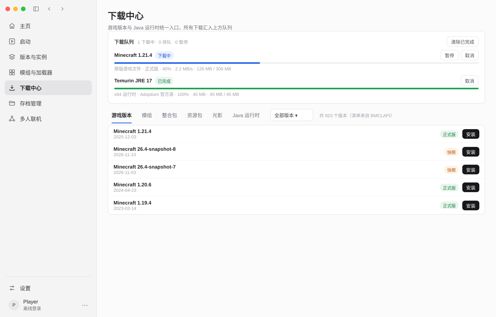
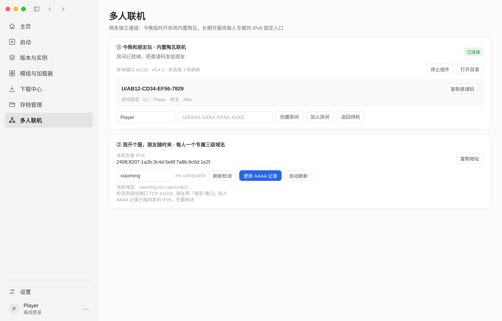

把启动器做成桌面程序，
而不是一个网页壳
网页套壳的代价不在"能不能用"，而在每次操作都要等一层浏览器：白屏、加载骨架、右键菜单、输入法、拖拽文件、系统托盘，处处错位。原生之后，这些都由 Windows 自己处理。
原生界面
窗口、侧栏、列表、弹窗全部由 XAML 绘制。侧栏可收起到 64px 只留图标，页面切换是内存里的路由历史，后退/前进与窗口快捷键都按桌面习惯工作。
- 无边框窗口 + 自绘标题栏，拖动、缩放、最大化符合系统行为
- 字体与图标随包分发，离线也不回退成宋体
- 设置页内存滑条为六色渐变轨道，拖动即时生效
实例与版本
新建实例不再跳转网页：选版本、选加载器、填内存、挑 Java，一次表单走完。实例列表支持启动、重命名、复制、删除，删除只作用于实例目录，不碰存档与账号。
- 加载器安装回填真实版本号，失败有错误码可查
- 启动直读本地 JSON，不再靠界面假进度条
- 游戏退出后按钮自动回弹，可连续启动
下载中心
版本、模组、整合包、资源包、光影、Java 运行时统一进一条队列，最多两路并发。任务可暂停、继续、取消、清除，队列状态落在本地文件，重启后仍在。
- 官方清单与镜像源可切，国内网络不必硬扛
- 整合包与资源包直连 Modrinth，不必手动找链接
- 进度、速度、剩余时间逐任务显示
账户与联机
账户窗口支持离线 UUID、微软设备码登录、外置皮肤站登录三种方式，切换与删除都在同一个列表里完成。联机页负责陶瓦联机组件下载、房间创建与端口探测。
- 微软登录走设备码，不需要内嵌浏览器
- 离线 UUID 按
OfflinePlayer:名称规则生成 - 端口被占用时有明确提示，不静默失败
界面一览
下面两张是设计还原稿，用于说明布局与配色；实际运行效果以安装后的程序为准。


下载
发布产物统一放在公开仓库的 Releases 中。文件为整包 zip，解压即用，不写注册表、不装服务。
原生界面全量迁移完成，移除 WebView2 与全部网页资源；更新检查与启动上报接入云端。
data/运行要求
Windows 10 1809 及以上或 Windows 11，64 位。自包含包已带运行时，无需另装 .NET。
- 建议 4 GB 以上内存；实例内存可在设置里单独分配
- 首次启动会在程序目录创建
data/，账号、实例、存档都在这里 - 更新由启动器自行下载整包并替换，玩家数据不会被覆盖
- 不需要安装 WebView2 Runtime，也不再请求任何网页资源
常见问题
与安装、升级、数据安全相关的几个问题。
启动器需要联网吗？+
下载游戏、模组、加载器需要联网；已经装好的实例可以离线启动。启动时会上报一次版本与运行状态，用于判断是否需要更新，不包含任何账号信息。
更新会不会覆盖我的存档和账号？+
不会。更新只覆盖程序文件，data/ 目录（账号、实例、存档、下载队列、设备标识）原地保留。替换脚本使用只覆盖不删除的方式，不会清理未知文件。
为什么安装包比旧版小了很多？+
旧版把整套网页资源与 WebView2 一起打包，体积接近 200 MB。移除网页层后只剩程序、运行时与字体图标，自包含包约 79 MB。
支持哪些加载器？+
Forge、Fabric、NeoForge、Quilt 与官方版本。安装失败会给出错误码，可在实例详情里重试，不需要重新建实例。